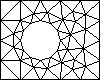

EasyMesh
version 1.4
A Two-Dimensional Quality Mesh Generator 
Bojan Niceno
niceno@univ.trieste.it
The development of EasyMesh was made possible thanks to a fellowship from the "Consortium for International Development of the University of Trieste", which is gratefully aknowledged.